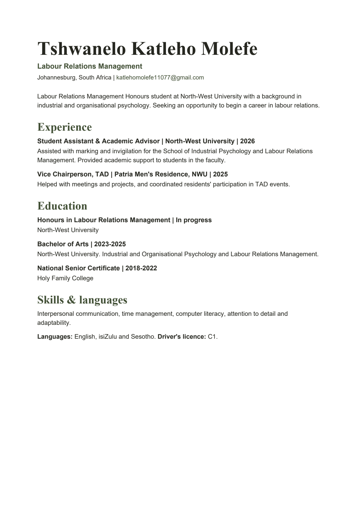

Katleho
Molefe
Labour Relations Management
I’m an Honours student at North-West University with a background in industrial and organisational psychology. I’m looking for an opportunity to start my career in labour relations.
Johannesburg, South Africa
Experience
-
2026
Student Assistant & Academic Advisor
North-West University
Assisted with marking and invigilation for the School of Industrial Psychology and Labour Relations Management. Provided academic support to students in the faculty.
-
2025
Vice Chairperson, TAD
Patria Men’s Residence · North-West University
Helped with meetings and projects, and coordinated residents’ participation in TAD events.
Education
-
In progress
Honours in Labour Relations Management
North-West University
-
2023–2025
Bachelor of Arts
North-West University
Industrial and Organisational Psychology and Labour Relations Management.
-
2018–2022
National Senior Certificate
Holy Family College
Skills & languages
Interpersonal communication, time management, computer literacy, attention to detail and adaptability.
Languages: English, isiZulu and Sesotho.

Get in touch
I’d welcome a conversation about opportunities in labour relations.